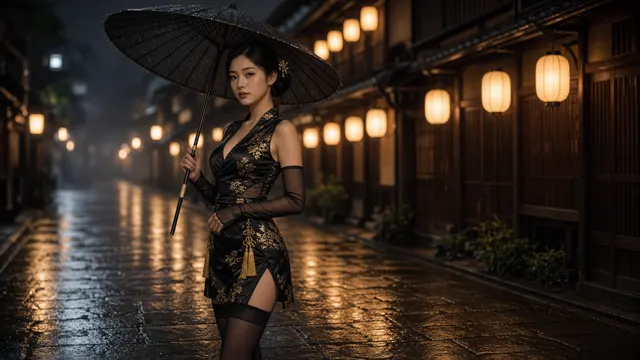

Coolcat
AI ART / PROMPTS
作品
人像
UI
关于
@minaoneday ↗
COOLCAT / GALLERY
#和风
3 件相关作品
紫藤和服女剑士 Wisteria Kimono Swordswoman
2026-09-27 · #和风 #华丽
浮世绘雷之剑士闪卡 Ukiyo-e Thunder Swordsman Holo Card
2026-09-27 · #浮世绘 #集换卡

黑金和风·雨夜京都 Black & Gold in Rainy Kyoto
2026-09-27 · #和风 #时装大片